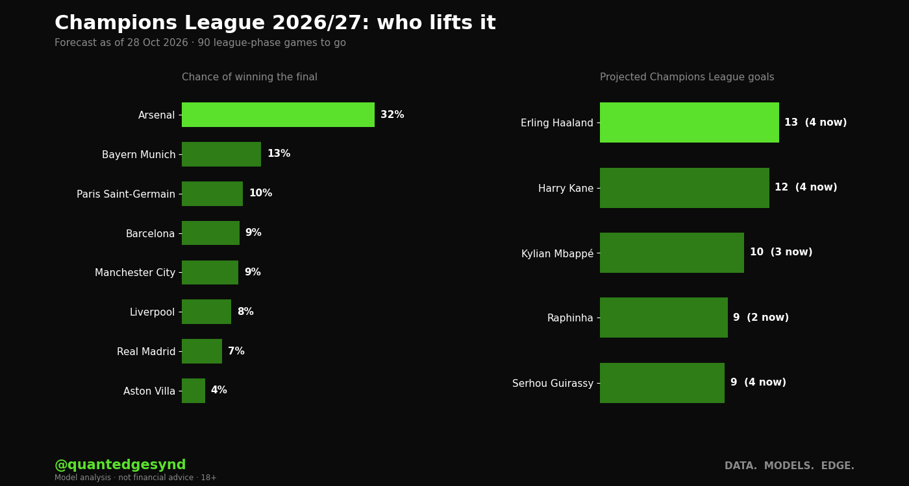

Arsenal lead our Champions League forecast on 32%. Bayern Munich are next on 13%. 90 league-phase games to go. Re-run after every match day.
- Top scorer. Erling Haaland (Manchester City) has 4 and projects to about 13. Harry Kane (Bayern Munich) has 4, projected about 12.
- Behind the favourite. Seven more clubs show 3% or more.
Next to the market. In late October bookmakers had Barcelona as favourites, with Paris Saint-Germain next and Arsenal just behind. Opta's supercomputer had Arsenal about one in five. We are higher on Arsenal than both, and lower on Barcelona and Paris Saint-Germain than the bookmakers. Where we differ, our own tests say the prices have the better record.

Who lifts it
| Club | Points now | Top 8 | Quarter-final | Semi-final | Final | Winner |
|---|---|---|---|---|---|---|
| Arsenal | 7 | 91% | 83% | 65% | 48% | 32% |
| Bayern Munich | 5 | 59% | 69% | 44% | 25% | 13% |
| Paris Saint-Germain | 9 | 89% | 70% | 40% | 21% | 10% |
| Barcelona | 6 | 63% | 65% | 36% | 19% | 9% |
| Manchester City | 6 | 56% | 61% | 35% | 19% | 9% |
| Liverpool | 9 | 86% | 67% | 37% | 18% | 8% |
| Real Madrid | 9 | 90% | 65% | 33% | 15% | 7% |
| Aston Villa | 9 | 72% | 55% | 24% | 10% | 4% |
| Inter | 3 | 16% | 30% | 13% | 5% | 2% |
| Atlético Madrid | 4 | 18% | 27% | 11% | 4% | 1% |
| Sporting CP | 6 | 18% | 25% | 10% | 3% | 1% |
| Borussia Dortmund | 6 | 16% | 22% | 7% | 2% | 1% |
| AS Roma | 4 | 7% | 17% | 6% | 2% | 1% |
| Manchester United | 3 | 4% | 15% | 6% | 2% | <1% |
| Como | 6 | 15% | 17% | 5% | 1% | <1% |
| Napoli | 3 | 3% | 10% | 3% | 1% | <1% |
| Club Brugge | 6 | 17% | 15% | 4% | 1% | <1% |
| PSV Eindhoven | 4 | 7% | 10% | 3% | <1% | <1% |
| Villarreal | 3 | 5% | 9% | 2% | 1% | <1% |
| Real Betis | 9 | 31% | 17% | 3% | 1% | <1% |
Shown: the 20 most likely winners among clubs more likely than not to reach the knockouts. Clubs 9th to 24th go into the play-offs and can still reach the quarter-finals, so a quarter-final chance can be higher than a top-eight chance.
Top scorers
Champions League goals, this season's competition only.
| Player | Club | Goals now | Projected | Range (8 in 10) | Finishes top |
|---|---|---|---|---|---|
| Erling Haaland | Manchester City | 4 | 13 | 8 to 19 | 30% |
| Harry Kane | Bayern Munich | 4 | 12 | 7 to 18 | 24% |
| Kylian Mbappé | Real Madrid | 3 | 10 | 6 to 16 | 13% |
| Raphinha | Barcelona | 2 | 9 | 5 to 14 | 8% |
| Serhou Guirassy | Borussia Dortmund | 4 | 9 | 6 to 13 | 5% |
| Ermedin Demirović | VfB Stuttgart | 4 | 9 | 5 to 12 | 3% |
| Michael Olise | Bayern Munich | 2 | 8 | 4 to 13 | 3% |
| Ferran Torres | Paris Saint-Germain | 3 | 8 | 4 to 11 | 2% |
| Luis Suárez | Sporting CP | 4 | 7 | 5 to 11 | 1% |
| Nicolas Jackson | Aston Villa | 3 | 7 | 4 to 11 | 2% |
How it works
The rest of the league phase is played out 10,000 times. Then the play-offs, last 16, quarter-finals and semi-finals over two legs, with extra time and penalties, and a one-off final.
Club strengths come from one rating for every club in Europe, fitted on about 28,500 matches: league games from 41 European divisions plus Champions League, Europa League and Conference League games from the last two seasons and this one so far. League games tie a club to its rivals, European games tie the leagues together, and recent games count more. We tuned it on last season's 531 European games, rating clubs only from matches played before that season, and checked it on this season's first 54 league-phase games. Each simulated season also allows for a club being better or worse than its rating.
What it can't see
The real draw. We keep the seeding but fix the bracket in advance, which the real draw does not do exactly. Injuries, January signings and manager changes. These ratings come from results, not prices, and our own tests found prices read outcomes better. Not scored yet: we keep every update and will score them all when the final is played.
The other forecasts
Premier League forecast · La Liga forecast · Serie A forecast · Bundesliga forecast · Ligue 1 forecast · Ballon d'Or 2027 · Injury risk